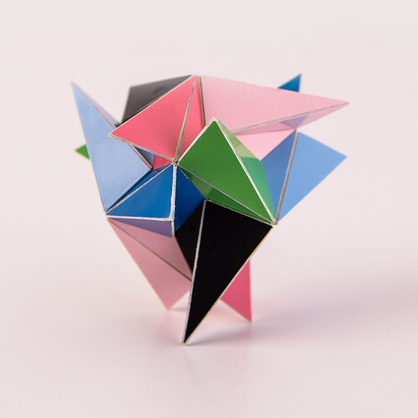
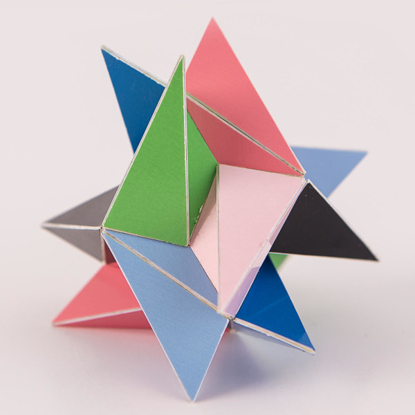

Tetrahedral Trinja Star

Pictures copyright by PhotoArt Studio Hörby
This model was built in October 2019 and its dimensions is around 7 cm x 7 cm x 7cm.
This polyhedron only consists of regular heptagons that are folded over a diagonal. There are different ways in which you can fold a regular heptagon and for this polyhedron the folding is done in a 'W' shape.
The polyhedron has the same rotational symmetry as a tetrahedron, i.e. without the reflections. I like these kind of symmetries where the reflections are missing. I found Nemesis first, then I understood that the heptagons were organised in triplets around a star with three points. I thought that this variant might exist with tetrahedral and octahedron symmetry as well. Then I led a search program towards this one.
Polyhedra that lack reflections are usually a bit more challenging to build and Nemesis was no exception. Since I found the right build strategy for that one before, it was not a problem building this one using the same strategy. The search program found two variants of this one. In the interactive 3D model you can choose which one to look at.
Here is the same model while more or less looking into an order two symmetry axis. 
Last Updated
2019-12-09